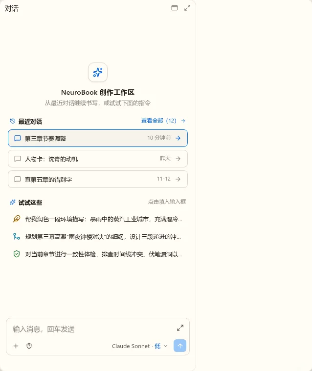
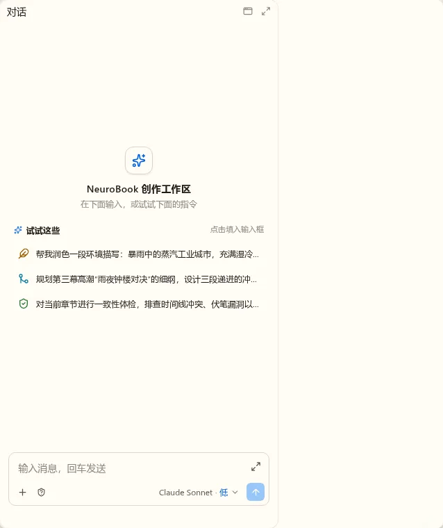
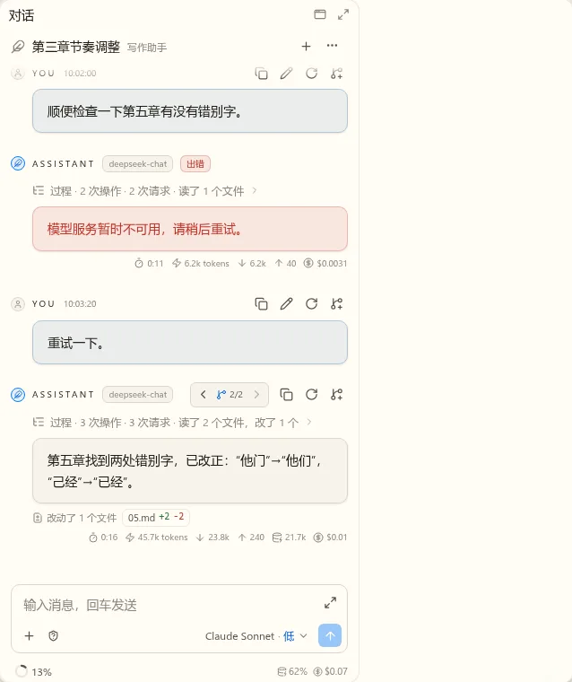
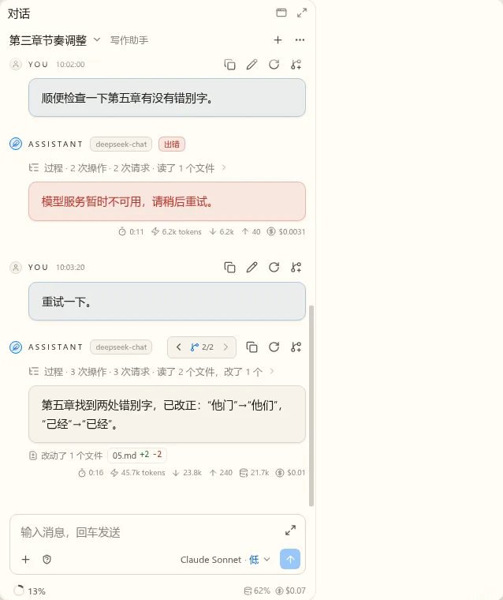
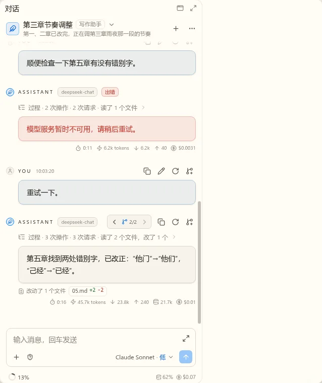
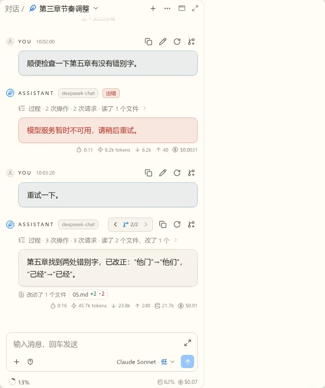
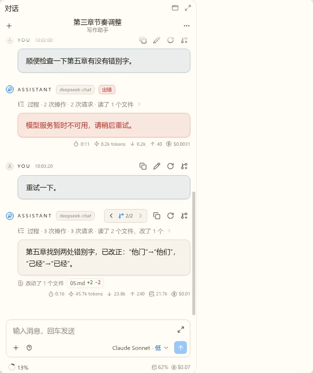

t29 第 2 轮：对话面板的第一屏与顶栏
第一屏照旧应用的 welcome 这样做？
推荐同意：版式、图标与文字照旧应用的 AgentChatEmptyState；没有历史会话时去掉“最近对话”一块。
有历史会话

最近 3 条，卡片悬停描强调色；“查看全部”打开会话列表。
一个会话都没有

和旧应用不同的两处：“推荐创作指令”旁的“智能生成”去掉（旧应用里那三条是写死的，不是生成的）；没选会话时状态栏整行空着。
“试试这些”的三条指令从哪来？
推荐 A：指令跟着 Profile 走，主创带三条写作的；以后加别的 Profile（例如审校）时它们有自己的开场。
A Profile 声明
Profile 里多一个可选字段，至多 3 条；新建会话用的那个 Profile 有就显示，没有就不显示这一块。用户级 Profile 也能写。
B 应用内置三条
写死在应用里，和旧应用一样；换 Profile 也不变。
C 不要这一块
第一屏只有欢迎与最近对话。
有会话时的顶栏选哪版？
推荐 C 并进面板头：现在面板头写“对话”、下面又一行会话标题，两行标题叠着；并进去以后少一行，VS Code、Cursor 的对话面板也是这样。代价是工作台要让视图往自己的面板头里放内容（视图的 Spec 加一条），比别的几版多一块平台改动。

现在（只去掉了线）：面板头“对话”，下面一行是 Profile 图标、会话标题、Profile 名与新建、更多。
A 轻量单行

去掉 Profile 图标，标题是会话下拉的按钮；改动最小，仍是两行标题。
B 两行带摘要

照旧应用的顶栏：第二行是后台生成的会话摘要；比现在高一点。
C 并进面板头

Profile 名与摘要在会话标题的悬停里。
D 标题居中

像手机上的聊天应用；右栏窄时标题能用的宽度最少。
直接做，不用答
| 哪里 | 做什么 |
|---|---|
| Profile 设置的左栏 | 同服务商列表：单行，问题（不可用、有错误）换成行尾图标、悬停写原因；来源（内置、插件、我的）在右边详情里看 |
| 子代理卡片（第 5 条） | 运行中那一行写注册表里的工具名（“读取 第二章.md”），不写工具 id |
| 没选会话时的状态栏 | 不显示“0%”与“免费”：还没有用量，整行空着 |
| 删除服务商的确认框 | 不变：写明去掉几个模型、密钥一起删、哪些角色会变成未绑定 |
已定
- 删除服务商：条目悬停出删除图标，右键也能删（第 1 轮）
- 服务商条目改单行，问题换成行尾图标（第 1 轮）
- 状态栏的自定义照第 1 轮的稿做：右键勾选、设置里分左右两组排序、用量四项合成一项、提醒类总显示（第 1 轮）
- 没选会话时去掉“未选择会话”一行，第一屏是欢迎与最近会话，照旧应用的 welcome 做（第 1 轮，本轮出了新稿）
- 顶栏下、输入框上的两条横线去掉，消息在顶栏下淡出（第 1 轮）
- 5 小时与 7 天限额留到做订阅登录时；缓存倒计时只给缓存时长明确的服务商（11-16）
- 状态栏用勾选与插件贡献的项，不做配一条命令（11-16）